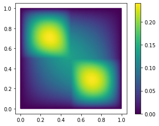
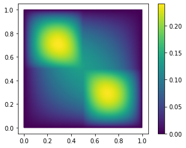

Tutorial: Projecting a Model¶
Run this tutorial
Click here to run this tutorial on mybinder.org:In this tutorial we will show how pyMOR builds a reduced-order model by projecting the full-order model onto a given reduced space. If you want to learn more about building a reduced space, you can find an introduction in Tutorial: Building a Reduced Basis.
We will start by revisiting the concept of Galerkin projection and then manually project the model ourselves. We will then discuss offline/online decomposition of parametric models and see how pyMOR’s algorithms automatically handle building an online-efficient reduced-order model. Along the way, we will take a look at some of pyMOR’s source code to get a better understanding of how pyMOR’s components fit together.
Model setup¶
As a full-order Model, we will use the same
thermal block benchmark
problem as in Tutorial: Building a Reduced Basis. In particular, we will use pyMOR’s
builtin discretization toolkit
(see Tutorial: Using pyMOR’s discretization toolkit) to construct the FOM. However, all we say
works exactly the same when a FOM of the same mathematical structure is provided
by an external PDE solver (see Tutorial: Binding an external PDE solver to pyMOR).
Since this tutorial is also supposed to give you a better overview of pyMOR’s
architecture, we will not import everything from the pymor.basic convenience
module but directly import all classes and methods from their original locations in
pyMOR’s subpackages.
Let’s build a 2-by-2 thermal block Model as our FOM:
from pymor.analyticalproblems.thermalblock import thermal_block_problem
from pymor.discretizers.builtin import discretize_stationary_cg
p = thermal_block_problem((2,2))
fom, _ = discretize_stationary_cg(p, diameter=1/100)
To get started, we take a look at one solution of the FOM for some fixed parameter values.
U = fom.solve([1., 0.1, 0.1, 1.])
fom.visualize(U)

To build the ROM, we will need a reduced space \(V_N\) of small dimension \(N\).
Any subspace of the solution_space of the FOM will
do for our purposes here. We choose to build a basic POD space from some random solution
snapshots.
from pymor.algorithms.pod import pod
from matplotlib import pyplot as plt
snapshots = fom.solution_space.empty()
for mu in p.parameter_space.sample_randomly(20):
snapshots.append(fom.solve(mu))
basis, singular_values = pod(snapshots, modes=10)
The singular value decay looks promising:
_ = plt.semilogy(singular_values)
Solving the Model¶
Now that we have our FOM and a reduced space \(V_N\) spanned by basis, we can project
the Model. However, before doing so, we need to understand how actually
solving the FOM works. Let’s take a look at what
solve does:
from pymor.tools.formatsrc import print_source
print_source(fom.solve)
def solve(self, mu=None, return_error_estimate=False, **kwargs):
"""Solve the discrete problem for the |parameter values| `mu`.
This method returns a |VectorArray| with a internal state
representation of the model's solution for given
|parameter values|. It is a convenience wrapper around
:meth:`compute`.
The result may be :mod:`cached <pymor.core.cache>`
in case caching has been activated for the given model.
Parameters
----------
mu
|Parameter values| for which to solve.
return_error_estimate
If `True`, also return an error estimate for the computed solution.
kwargs
Additional keyword arguments passed to :meth:`compute` that
might affect how the solution is computed.
Returns
-------
The solution |VectorArray|. When `return_error_estimate` is `True`,
the estimate is returned as second value.
"""
data = self.compute(
solution=True,
solution_error_estimate=return_error_estimate,
mu=mu,
**kwargs
)
if return_error_estimate:
return data['solution'], data['solution_error_estimate']
else:
return data['solution']
This does not look too interesting. Actually, solve
is just a convenience method around compute which
handles the actual computation of the solution and various other associated values like
outputs or error estimates. Next, we take a look at the implemenation of
compute:
print_source(fom.compute)
def compute(self, solution=False, output=False, solution_d_mu=False, output_d_mu=False,
solution_error_estimate=False, output_error_estimate=False,
output_d_mu_return_array=False, *, mu=None, **kwargs):
"""Compute the solution of the model and associated quantities.
This methods computes the output of the model it's internal state
and various associated quantities for given |parameter values|
`mu`.
.. note::
The default implementation defers the actual computations to
the methods :meth:`_compute_solution`, :meth:`_compute_output`,
:meth:`_compute_solution_error_estimate` and :meth:`_compute_output_error_estimate`.
The call to :meth:`_compute_solution` is :mod:`cached <pymor.core.cache>`.
In addition, |Model| implementors may implement :meth:`_compute` to
simultaneously compute multiple values in an optimized way. The corresponding
`_compute_XXX` methods will not be called for values already returned by
:meth:`_compute`.
Parameters
----------
solution
If `True`, return the model's internal state.
output
If `True`, return the model output.
solution_d_mu
If not `False`, either `True` to return the derivative of the model's
internal state w.r.t. all parameter components or a tuple `(parameter, index)`
to return the derivative of a single parameter component.
output_d_mu
If `True`, return the gradient of the model output w.r.t. the |Parameter|.
solution_error_estimate
If `True`, return an error estimate for the computed internal state.
output_error_estimate
If `True`, return an error estimate for the computed output.
output_d_mu_return_array
if `True`, return the output gradient as a |NumPy array|.
Otherwise, return a dict of gradients for each |Parameter|.
mu
|Parameter values| for which to compute the values.
kwargs
Further keyword arguments to select further quantities that sould
be returned or to customize how the values are computed.
Returns
-------
A dict with the computed values.
"""
# make sure no unknown kwargs are passed
assert kwargs.keys() <= self._compute_allowed_kwargs
# parse parameter values
if not isinstance(mu, Mu):
mu = self.parameters.parse(mu)
assert self.parameters.assert_compatible(mu)
# log output
# explicitly checking if logging is disabled saves some cpu cycles
if not self.logging_disabled:
self.logger.info(f'Solving {self.name} for {mu} ...')
# first call _compute to give subclasses more control
data = self._compute(solution=solution, output=output,
solution_d_mu=solution_d_mu, output_d_mu=output_d_mu,
solution_error_estimate=solution_error_estimate,
output_error_estimate=output_error_estimate,
mu=mu, **kwargs)
if (solution or output or solution_error_estimate
or output_error_estimate or solution_d_mu or output_d_mu) \
and 'solution' not in data:
retval = self.cached_method_call(self._compute_solution, mu=mu, **kwargs)
if isinstance(retval, dict):
assert 'solution' in retval
data.update(retval)
else:
data['solution'] = retval
if output and 'output' not in data:
# TODO use caching here (requires skipping args in key generation)
retval = self._compute_output(data['solution'], mu=mu, **kwargs)
if isinstance(retval, dict):
assert 'output' in retval
data.update(retval)
else:
data['output'] = retval
if solution_d_mu and 'solution_d_mu' not in data:
if isinstance(solution_d_mu, tuple):
retval = self._compute_solution_d_mu_single_direction(
solution_d_mu[0], solution_d_mu[1], data['solution'], mu=mu, **kwargs)
else:
retval = self._compute_solution_d_mu(data['solution'], mu=mu, **kwargs)
# retval is always a dict
if isinstance(retval, dict) and 'solution_d_mu' in retval:
data.update(retval)
else:
data['solution_d_mu'] = retval
if output_d_mu and 'output_d_mu' not in data:
# TODO use caching here (requires skipping args in key generation)
retval = self._compute_output_d_mu(data['solution'], mu=mu,
return_array=output_d_mu_return_array,
**kwargs)
# retval is always a dict
if isinstance(retval, dict) and 'output_d_mu' in retval:
data.update(retval)
else:
data['output_d_mu'] = retval
if solution_error_estimate and 'solution_error_estimate' not in data:
# TODO use caching here (requires skipping args in key generation)
retval = self._compute_solution_error_estimate(data['solution'], mu=mu, **kwargs)
if isinstance(retval, dict):
assert 'solution_error_estimate' in retval
data.update(retval)
else:
data['solution_error_estimate'] = retval
if output_error_estimate and 'output_error_estimate' not in data:
# TODO use caching here (requires skipping args in key generation)
retval = self._compute_output_error_estimate(data['solution'], mu=mu, **kwargs)
if isinstance(retval, dict):
assert 'output_error_estimate' in retval
data.update(retval)
else:
data['output_error_estimate'] = retval
return data
What we see is a default implementation from Model that
takes care of checking the input parameter values mu, caching and
logging, but defers the actual computations to further private methods.
Implementors can directly implement _compute to compute
multiple return values at once in an optimized way. Our given model, however, just implements
_compute_solution where we can find the
actual code:
print_source(fom._compute_solution)
def _compute_solution(self, mu=None, **kwargs):
return self.operator.apply_inverse(self.rhs.as_range_array(mu), mu=mu)
What does this mean? If we look at the type of fom,
type(fom)
pymor.models.basic.StationaryModel
we see that fom is a StationaryModel which encodes an equation of the
form
Here, \(L\) is a linear or non-linear parametric Operator and \(F\) is a
parametric right-hand side vector. In StationaryModel, \(L\) is represented by
the operator attribute. So
self.operator.apply_inverse(X, mu=mu)
determines the solution of this equation for the parameter values mu and a right-hand
side given by X. As you see above, the right-hand side of the equation is given by the
rhs attribute.
However, while apply_inverse expects a
VectorArray, we see that rhs is actually
an Operator:
fom.rhs
NumpyMatrixOperator(<20201x1 dense>, range_id='STATE')
This is due to the fact that VectorArrays in pyMOR cannot be parametric. So to allow
for parametric right-hand sides, this right-hand side is encoded by a linear Operator
that maps numbers to scalar multiples of the right-hand side vector. Indeed, we see that
fom.rhs.source
NumpyVectorSpace(1)
is one-dimensional, and if we look at the base-class implementation of
as_range_array
from pymor.operators.interface import Operator
print_source(Operator.as_range_array)
def as_range_array(self, mu=None):
"""Return a |VectorArray| representation of the operator in its range space.
In the case of a linear operator with |NumpyVectorSpace| as
:attr:`~Operator.source`, this method returns for given |parameter values|
`mu` a |VectorArray| `V` in the operator's :attr:`~Operator.range`,
such that ::
V.lincomb(U.to_numpy()) == self.apply(U, mu)
for all |VectorArrays| `U`.
Parameters
----------
mu
The |parameter values| for which to return the |VectorArray|
representation.
Returns
-------
V
The |VectorArray| defined above.
"""
assert isinstance(self.source, NumpyVectorSpace) and self.linear
assert self.source.dim <= as_array_max_length()
return self.apply(self.source.from_numpy(np.eye(self.source.dim)), mu=mu)
we see all that as_range_array
does is to apply the operator to \(1\). (NumpyMatrixOperator.as_range_array
has an optimized implementation which just converts the stored matrix to a
NumpyVectorArray.)
Let’s try solving the model on our own:
U2 = fom.operator.apply_inverse(fom.rhs.as_range_array(mu), mu=[1., 0.1, 0.1, 1.])
---------------------------------------------------------------------------
TypeError Traceback (most recent call last)
<ipython-input-13-787fcc89bb27> in <module>
----> 1 U2 = fom.operator.apply_inverse(fom.rhs.as_range_array(mu), mu=[1., 0.1, 0.1, 1.])
/builds/pymor/pymor/src/pymor/operators/constructions.py in apply_inverse(self, V, mu, initial_guess, least_squares)
191 return U
192 else:
--> 193 return super().apply_inverse(V, mu=mu, initial_guess=initial_guess, least_squares=least_squares)
194
195 def apply_inverse_adjoint(self, U, mu=None, initial_guess=None, least_squares=False):
/builds/pymor/pymor/src/pymor/operators/interface.py in apply_inverse(self, V, mu, initial_guess, least_squares)
219 assert initial_guess is None or initial_guess in self.source and len(initial_guess) == len(V)
220 from pymor.operators.constructions import FixedParameterOperator
--> 221 assembled_op = self.assemble(mu)
222 if assembled_op != self and not isinstance(assembled_op, FixedParameterOperator):
223 return assembled_op.apply_inverse(V, initial_guess=initial_guess, least_squares=least_squares)
/builds/pymor/pymor/src/pymor/operators/constructions.py in assemble(self, mu)
138 from pymor.algorithms.lincomb import assemble_lincomb
139 operators = tuple(op.assemble(mu) for op in self.operators)
--> 140 coefficients = self.evaluate_coefficients(mu)
141 # try to form a linear combination
142 op = assemble_lincomb(operators, coefficients, solver_options=self.solver_options,
/builds/pymor/pymor/src/pymor/operators/constructions.py in evaluate_coefficients(self, mu)
76 List of linear coefficients.
77 """
---> 78 assert self.parameters.assert_compatible(mu)
79 return [c.evaluate(mu) if hasattr(c, 'evaluate') else c for c in self.coefficients]
80
/builds/pymor/pymor/src/pymor/parameters/base.py in assert_compatible(self, mu)
182 Otherwise, an `AssertionError` will be raised.
183 """
--> 184 assert self.is_compatible(mu), self.why_incompatible(mu)
185 return True
186
/builds/pymor/pymor/src/pymor/parameters/base.py in is_compatible(self, mu)
194 """
195 if mu is not None and not isinstance(mu, Mu):
--> 196 raise TypeError('mu is not a Mu instance. (Use parameters.parse?)')
197 return not self or \
198 mu is not None and all(getattr(mu.get(k), 'size', None) == v for k, v in self.items())
TypeError: mu is not a Mu instance. (Use parameters.parse?)
That did not work too well! In pyMOR, all parametric objects expect the
mu argument to be an instance of the Mu
class. compute and related methods
like solve are an exception: for
convenience, they accept as a mu argument anything that can be converted
to a Mu instance using the
parse method of the
Parameters class. In fact, if you look
back at the implementation of compute,
you see the explicit call to parse.
We try again:
mu = fom.parameters.parse([1., 0.1, 0.1, 1.])
U2 = fom.operator.apply_inverse(fom.rhs.as_range_array(mu), mu=mu)
We can check that we get exactly the same result as from our earlier call
to solve:
(U-U2).norm()
array([0.])
Galerkin Projection¶
Now that we understand how the FOM works, we want to build a reduced-order model
which approximates the FOM solution \(U(\mu)\) in \(V_N\).
To that end we call \(\mathbb{V}_N\) the matrix that has the vectors in
basis as columns. The coefficients of the solution of the ROM w.r.t. these
basis vectors will be called \(u_N(\mu)\). We want that
Substituting \(\mathbb{V}_N \cdot u_N(\mu)\) for \(u(\mu)\) into the equation system defining the FOM, we arrive at:
However, this is an over-determined system: we have decreased the degrees of freedom of the solution, but did not change the number of constraints (the dimension of \(F(\mu)\)). So in general, this system will not have a solution.
One approach to define \(u_N\) from this ansatz is to choose \(u_N\) as a minimizer of norm of the residual of the equations system, i.e. to minimize the defect by which \(u_N\) fails to satisfy the equations:
While this is a feasible (and sometimes necessary) approach that can be realized with pyMOR as well, we choose here an even simpler method by requiring that the residual is orthogonal to our reduced space, i.e.
where the \(\mathbb{V}_{N,i}\) denote the columns of \(\mathbb{V}_N\)
and \((\cdot, \cdot)\) denotes some inner product on our
solution_space.
Let us assume that \(L\) is actually linear for all parameter values \(\mu\), and that \(\mathbb{A}(\mu)\) is its matrix representation. Further assume that \((\cdot, \cdot)\) is the Euclidean inner product. Then we arrive at
which is a \(N\times N\) linear equation system. In the common case that \(\mathbb{A}(\mu)\) is positive definite, the reduced system matrix
is positive definite as well, and \(u_N(\mu)\) is uniquely determined. We call \(U_N(\mu)\) the Galerkin projection of \(U(\mu)\) onto \(V_N\).
You may know the concept of Galerkin projection from finite element methods. Indeed, if our equation system comes from the weak formulation of a PDE of the form
the matrix of the bilinear form \(a(\cdot, \cdot; \mu)\) w.r.t. a finite element basis is \(\mathbb{A}(\mu)\), and \(F(\mu)\) is the vector representation of the linear functional \(f\) w.r.t. the dual finite element basis, then
is exactly the equation system obtained from Galerkin projection of the weak PDE formulation onto the reduced space, i.e. solving
for \(U_N(\mu) \in V_N\). As for finite element methods, Cea’s Lemma guarantees that when \(a(\cdot, \cdot, \mu)\) is positive definite, \(U_N\) will be a quasi-best approximation of \(U(\mu)\) in \(V_N\). So, if we have constructed a good reduced space \(V_N\), then Galerkin projection will also give us a good ROM to actually find a good approximation in \(V_N\).
Let’s compute the Galerkin ROM for our FOM at hand with pyMOR. To compute \(\mathbb{A}_N\)
we use the apply2 method of fom.operator.
For computing the inner products \(\mathbb{V}_N^T \cdot F(\mu)\) we can simply compute the
inner product with the basis VectorArray using its inner
method:
reduced_operator = fom.operator.apply2(basis, basis, mu=mu)
reduced_rhs = basis.inner(fom.rhs.as_range_array(mu))
Now we just need to solve the resulting linear equation system using NumPy to obtain
\(u_N(\mu)\):
import numpy as np
u_N = np.linalg.solve(reduced_operator, reduced_rhs)
u_N
array([[-15.16166755],
[ -1.06060498],
[ -4.3360103 ],
[ 3.81207226],
[ 2.74026133],
[ 0.98606744],
[ -0.1756243 ],
[ -1.26817802],
[ 0.55510353],
[ -0.0470637 ]])
To reconstruct the high-dimensional approximation \(\mathbb{V}_N \cdot u_N(\mu)\)
from \(u_N(\mu)\) we can use the lincomb
method:
U_N = basis.lincomb(u_N.T)
U_N
NumpyVectorArray(
[[0.00000000e+00 0.00000000e+00 0.00000000e+00 ... 3.51308241e-04
2.29395339e-04 8.64727182e-05]],
NumpyVectorSpace(20201, id='STATE'))
Let’s see, how good our reduced approximation is:
(U-U_N).norm(fom.h1_0_product) / U.norm(fom.h1_0_product)
array([0.01961789])
With only 10 basis vectors, we have achieved a relative \(H^1\)-error of 2%. We can also visually inspect our solution and the approximation error:
fom.visualize((U, U_N, U-U_N), separate_colorbars=True)
 


Building the ROM¶
So far, we have only constructed the ROM in the form of NumPy data structures:
type(reduced_operator)
numpy.ndarray
To build a proper pyMOR Model for the ROM, which can be used everywhere a Model is
expected, we first wrap these data structures as pyMOR Operators:
from pymor.operators.numpy import NumpyMatrixOperator
reduced_operator = NumpyMatrixOperator(reduced_operator)
reduced_rhs = NumpyMatrixOperator(reduced_rhs)
Galerkin projection does not change the structure of the model. So the ROM should again
be a StationaryModel. We can construct it easily as follows:
from pymor.models.basic import StationaryModel
rom = StationaryModel(reduced_operator, reduced_rhs)
rom
StationaryModel(NumpyMatrixOperator(<10x10 dense>), NumpyMatrixOperator(<10x1 dense>), products={})
Let’s check if it works as expected:
u_N2 = rom.solve()
u_N.T - u_N2.to_numpy()
array([[0., 0., 0., 0., 0., 0., 0., 0., 0., 0.]])
We get exactly the same result, so we have successfully built a pyMOR ROM.
Offline/Online Decomposition¶
There is one issue however. Our ROM has lost the parametrization since we
have assembled the reduced-order system for a specific set of
parameter values:
print(fom.parameters)
print(rom.parameters)
{diffusion: 4}
{}
Solving the ROM for a new mu would mean to build a new ROM with updated
system matrix and right-hand side. However, if we compare the timings,
from time import perf_counter
tic = perf_counter()
fom.solve(mu)
toc = perf_counter()
fom.operator.apply2(basis, basis, mu=mu)
basis.inner(fom.rhs.as_range_array(mu))
tac = perf_counter()
rom.solve()
tuc = perf_counter()
print(f'FOM: {toc-tic:.5f} (s)')
print(f'ROM assemble: {tac-toc:.5f} (s)')
print(f'ROM solve: {tuc-tac:.5f} (s)')
FOM: 0.08215 (s)
ROM assemble: 0.01343 (s)
ROM solve: 0.00141 (s)
we see that we lose a lot of our speedup when we assemble the ROM (which involves a lot of full-order dimensional operations).
To solve this issue we need to find a way to pre-compute everything we need
to solve the ROM once-and-for-all for all possible parameter values. Luckily,
the system operator of our FOM has a special structure:
fom.operator
LincombOperator(
(NumpyMatrixOperator(<20201x20201 sparse, 140601 nnz>, source_id='STATE', range_id='STATE', name='boundary_part'),
NumpyMatrixOperator(<20201x20201 sparse, 140601 nnz>, source_id='STATE', range_id='STATE', name='diffusion_0'),
NumpyMatrixOperator(<20201x20201 sparse, 140601 nnz>, source_id='STATE', range_id='STATE', name='diffusion_1'),
NumpyMatrixOperator(<20201x20201 sparse, 140601 nnz>, source_id='STATE', range_id='STATE', name='diffusion_2'),
NumpyMatrixOperator(<20201x20201 sparse, 140601 nnz>, source_id='STATE', range_id='STATE', name='diffusion_3')),
(1.0,
ProjectionParameterFunctional('diffusion', size=4, index=0, name='diffusion_0_0'),
ProjectionParameterFunctional('diffusion', size=4, index=1, name='diffusion_1_0'),
ProjectionParameterFunctional('diffusion', size=4, index=2, name='diffusion_0_1'),
ProjectionParameterFunctional('diffusion', size=4, index=3, name='diffusion_1_1')),
name='ellipticOperator')
We see that operator is a LincombOperator, a linear combination of Operators
with coefficients that may either be a number or a parameter-dependent number,
called a ParameterFunctional in pyMOR. In our case, all
operators are
NumpyMatrixOperators, which themselves don’t depend on any parameter. Only the
coefficients are
parameter-dependent. This allows us to easily build a parametric ROM that no longer
requires any high-dimensional operations for its solution by projecting each
Operator in the sum separately:
reduced_operators = [NumpyMatrixOperator(op.apply2(basis, basis))
for op in fom.operator.operators]
We could instantiate a new LincombOperator of these reduced_operators manually.
An easier way is to use the with_ method,
which allows us to create a new object from a given ImmutableObject by replacing
some of its attributes by new values:
reduced_operator = fom.operator.with_(operators=reduced_operators)
The right-hand side of our problem is non-parametric,
fom.rhs.parameters
Parameters({})
so we don’t need to do anything special about it. We build a new ROM,
rom = StationaryModel(reduced_operator, reduced_rhs)
which now depends on the same Parameters as the FOM:
rom.parameters
Parameters({diffusion: 4})
We check that our new ROM still computes the same solution:
u_N3 = rom.solve(mu)
u_N.T - u_N3.to_numpy()
array([[0., 0., 0., 0., 0., 0., 0., 0., 0., 0.]])
Let’s see if our new ROM is actually faster than the FOM:
tic = perf_counter()
fom.solve(mu)
toc = perf_counter()
rom.solve(mu)
tac = perf_counter()
print(f'FOM: {toc-tic:.5f} (s)')
print(f'ROM: {tac-toc:.5f} (s)')
FOM: 0.08699 (s)
ROM: 0.00181 (s)
You should see a significant speedup of around two orders of magnitude.
In model order reduction, problems where the parameter values only enter
as linear coefficients are called parameter separable. Many real-life
application problems are actually of this type, and as you have seen in this
section, these problems admit an offline/online decomposition that
enables the online efficient solution of the ROM.
For problems that do not allow such an decomposition and also for non-linear
problems, more advanced techniques are necessary such as
empiricial interpolation.
Letting pyMOR do the work¶
So far we completely built the ROM ourselves. While this may not have been very complicated after all, you’d expect a model order reduction library to do the work for you and to automatically keep an eye on proper offline/online decomposition.
In pyMOR, the heavy lifting is handled by the
project method, which is able to perform
a Galerkin projection, or more general a Petrov-Galerkin projection, of any
pyMOR Operator. Let’s see, how it works:
from pymor.algorithms.projection import project
reduced_operator = project(fom.operator, basis, basis)
reduced_rhs = project(fom.rhs, basis, None )
The arguments of project are the Operator
to project, a reduced basis for the range
(test) space and a reduced basis for the source
(ansatz) space of the Operator. If no projection for one of these spaces shall be performed,
None is passed. Since we are performing Galerkin-projection, where test space into
which the residual is projected is the same as the ansatz space in which the solution
is determined, we pass basis twice when projecting fom.operator. Note that
fom.rhs only takes scalars as input, so we do not need to project anything in the ansatz space.
If we check the result,
reduced_operator
LincombOperator(
(NumpyMatrixOperator(<10x10 dense>, name='boundary_part'),
NumpyMatrixOperator(<10x10 dense>, name='diffusion_0'),
NumpyMatrixOperator(<10x10 dense>, name='diffusion_1'),
NumpyMatrixOperator(<10x10 dense>, name='diffusion_2'),
NumpyMatrixOperator(<10x10 dense>, name='diffusion_3')),
(1.0,
ProjectionParameterFunctional('diffusion', size=4, index=0, name='diffusion_0_0'),
ProjectionParameterFunctional('diffusion', size=4, index=1, name='diffusion_1_0'),
ProjectionParameterFunctional('diffusion', size=4, index=2, name='diffusion_0_1'),
ProjectionParameterFunctional('diffusion', size=4, index=3, name='diffusion_1_1')),
name='ellipticOperator')
we see, that pyMOR indeed has taken care of projecting each individual Operator
of the linear combination. We check again that we have built the same ROM:
rom = StationaryModel(reduced_operator, reduced_rhs)
u_N4 = rom.solve(mu)
u_N.T - u_N4.to_numpy()
array([[0., 0., 0., 0., 0., 0., 0., 0., 0., 0.]])
So how does project actually work? Let’s take
a look at the source:
print_source(project)
def project(op, range_basis, source_basis, product=None):
"""Petrov-Galerkin projection of a given |Operator|.
Given an inner product `( ⋅, ⋅)`, source vectors `b_1, ..., b_N`
and range vectors `c_1, ..., c_M`, the projection `op_proj` of `op`
is defined by ::
[ op_proj(e_j) ]_i = ( c_i, op(b_j) )
for all i,j, where `e_j` denotes the j-th canonical basis vector of R^N.
In particular, if the `c_i` are orthonormal w.r.t. the given product,
then `op_proj` is the coordinate representation w.r.t. the `b_i/c_i` bases
of the restriction of `op` to `span(b_i)` concatenated with the
orthogonal projection onto `span(c_i)`.
From another point of view, if `op` is viewed as a bilinear form
(see :meth:`apply2`) and `( ⋅, ⋅ )` is the Euclidean inner
product, then `op_proj` represents the matrix of the bilinear form restricted
to `span(b_i) / span(c_i)` (w.r.t. the `b_i/c_i` bases).
How the projection is realized will depend on the given |Operator|.
While a projected |NumpyMatrixOperator| will
again be a |NumpyMatrixOperator|, only a generic
:class:`~pymor.operators.constructions.ProjectedOperator` can be returned
in general. The exact algorithm is specified in :class:`ProjectRules`.
Parameters
----------
range_basis
The vectors `c_1, ..., c_M` as a |VectorArray|. If `None`, no
projection in the range space is performed.
source_basis
The vectors `b_1, ..., b_N` as a |VectorArray| or `None`. If `None`,
no restriction of the source space is performed.
product
An |Operator| representing the inner product. If `None`, the
Euclidean inner product is chosen.
Returns
-------
The projected |Operator| `op_proj`.
"""
assert source_basis is None or source_basis in op.source
assert range_basis is None or range_basis in op.range
assert product is None or product.source == product.range == op.range
rb = product.apply(range_basis) if product is not None and range_basis is not None else range_basis
try:
return ProjectRules(rb, source_basis).apply(op)
except NoMatchingRuleError:
op.logger.warning('Using inefficient generic projection operator')
return ProjectedOperator(op, range_basis, source_basis, product)
We see there is error checking and some code to handle the optional product Operator
used to project into the reduced range space.
The actual work is done by the apply method
of the ProjectRules object.
ProjectRules is a RuleTable, an ordered list of conditions with corresponding actions.
The list is traversed from top to bottom, and the action of the first matching condition is
executed. These RuleTables can also be modified by the user to customize the behavior
of an algorithm for a specific application. We will not go into the details of defining
or modifying a RuleTable here, but we will look at the rules of ProjectRules by looking
at its string representation:
from pymor.algorithms.projection import ProjectRules
ProjectRules
Pos Match Type Condition Action Name / Action
--- ---------- ----------------------------- -------------------------------
Description
0 ALWAYS None no_bases
1 CLASS ZeroOperator ZeroOperator
2 CLASS ConstantOperator ConstantOperator
3 GENERIC linear and not parametric apply_basis
4 CLASS ConcatenationOperator ConcatenationOperator
5 CLASS AdjointOperator AdjointOperator
6 CLASS EmpiricalInterpolatedOperator EmpiricalInterpolatedOperator
7 CLASS AffineOperator AffineOperator
8 CLASS LincombOperator LincombOperator
9 CLASS SelectionOperator SelectionOperator
10 CLASS BlockOperatorBase BlockOperatorBase
In the case of fom.operator, which is a LincombOperator, the rule with index 8 will
be the first matching rule. We can take a look at it:
ProjectRules.rules[8]
@match_class(LincombOperator)
def action_LincombOperator(self, op):
return self.replace_children(op).with_(solver_options=None)
The implementation of the action for LincombOperators uses the
replace_children method of RuleTable,
which will recursively apply ProjectionRules to all
children of the
Operator, collect the results and then return a new Operator where
the children have been replaced by the results of the applications of the
RuleTable. Here, the children
of an Operator are all of its attribute that are either Operators or lists or dicts
of Operators.
In our case, ProjectRules will be applied to all NumpyMatrixOperators held by
fom.operator. These are linear, non-parametric operators, for which rule 3
will apply:
ProjectRules.rules[3]
@match_generic(lambda op: op.linear and not op.parametric, 'linear and not parametric')
def action_apply_basis(self, op):
range_basis, source_basis = self.range_basis, self.source_basis
if source_basis is None:
try:
V = op.apply_adjoint(range_basis)
except NotImplementedError:
raise RuleNotMatchingError('apply_adjoint not implemented')
if isinstance(op.source, NumpyVectorSpace):
from pymor.operators.numpy import NumpyMatrixOperator
return NumpyMatrixOperator(V.to_numpy(), source_id=op.source.id, name=op.name)
else:
from pymor.operators.constructions import VectorArrayOperator
return VectorArrayOperator(V, adjoint=True, name=op.name)
else:
if range_basis is None:
V = op.apply(source_basis)
if isinstance(op.range, NumpyVectorSpace):
from pymor.operators.numpy import NumpyMatrixOperator
return NumpyMatrixOperator(V.to_numpy().T, range_id=op.range.id, name=op.name)
else:
from pymor.operators.constructions import VectorArrayOperator
return VectorArrayOperator(V, adjoint=False, name=op.name)
else:
from pymor.operators.numpy import NumpyMatrixOperator
return NumpyMatrixOperator(op.apply2(range_basis, source_basis), name=op.name)
This action has special cases for all possible combinations of given or not-given
range and source
bases. In our case, the else block of the second else block applies,
where we see our familiar apply2 call.
If you look at the rules of ProjectRules again, you see that
project can handle many more cases.
If all rules fail, a NoMatchingRuleError will be raised, in which case,
project will return a
ProjectedOperator, which just stores the
projection bases and performs the projection for each call to the Operator interface
methods. Thus, even when offline/online decomposition fails, still a mathematically correct
representation of the projected Operator is returned to allow testing the approximation
quality of the ROM before taking care of online efficiency in a later step.
Using Reductors¶
Instead of projecting each Operator of our FOM separately and then instantiating
the ROM with the projected Operators, we can use a reductor,
which does all the work for us. For a simple Galerkin projection of a StationaryModel,
we can use StationaryRBReductor:
from pymor.reductors.basic import StationaryRBReductor
reductor = StationaryRBReductor(fom, basis)
rom = reductor.reduce()
Again, we get the same ROM as before:
u_N5 = rom.solve(mu)
u_N.T - u_N5.to_numpy()
array([[0., 0., 0., 0., 0., 0., 0., 0., 0., 0.]])
As an additional feature, reduce
allows to project the model onto a smaller dimensional subspace of \(V_N\) by
extracting the ROM from a previously computed ROM for the full \(V_N\). This
is useful, in particular, when assessing the ROM for different basis sizes. The
actual projection is handled in the
project_operators method,
where we can find some well-known code:
print_source(reductor.project_operators)
def project_operators(self):
fom = self.fom
RB = self.bases['RB']
projected_operators = {
'operator': project(fom.operator, RB, RB),
'rhs': project(fom.rhs, RB, None),
'products': {k: project(v, RB, RB) for k, v in fom.products.items()},
'output_functional': project(fom.output_functional, None, RB) if fom.output_functional else None
}
return projected_operators
We see that the reductor also takes care of projecting output functionals and
inner products associated with the Model. The construction of the ROM from
the projected operators is performed by a separate method:
print_source(reductor.build_rom)
def build_rom(self, projected_operators, error_estimator):
return StationaryModel(error_estimator=error_estimator, **projected_operators)
More advanced reductors, such as CoerciveRBReductor
also assemble an a posteriori error estimator for the model order reduction error.
In the case of StationaryRBReductor, however,
error_estimator is always None.
Reductors also allow to compute \(U_N(\mu)\) from \(u_N(\mu)\) using
the reconstruct method:
U_N5 = reductor.reconstruct(u_N5)
(U_N - U_N5).norm()
array([0.])
Again, if we look at the source code, we see a familiar expression:
print_source(reductor.reconstruct)
def reconstruct(self, u, basis='RB'):
"""Reconstruct high-dimensional vector from reduced vector `u`."""
return self.bases[basis][:u.dim].lincomb(u.to_numpy())
Download the code:
tutorial_projection.py
tutorial_projection.ipynb